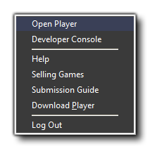
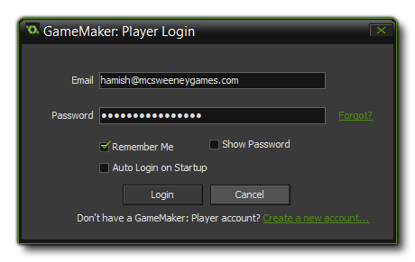

The GameMaker: Player is a stand alone application that can be used to play games made with GameMaker: Studio. It comes bundled with GameMaker, and as a developer you can upload your games to
it as well as play other people's games. If you have created a developer account, you can log in to the Player app from GameMaker: Studio using the option in this window. You can find further information about
becoming a developer and uploading games from the YoYo Games Knowledge Base here -
Player Articles.
The menu shown above is the menu after you have logged in to your Player account. If you do not have an account yet, then simply click the Log In option and click the link "Create a new account..."
to create your account and get access to the Player and the games it contains.

Once you have created your developer account, you can then log in through this menu, supplying your log in details as shown in the image above. When you have logged in, you will have access to the following
options:
- Open Player: Start the GameMaker: Player application.
- Developer Console: This will take you to the YoYo Games Player Developer Console in your web browser.
- Help: This will take you to the YoYo Games Knowledge Base where you can get help with any issues.
- Selling Games: Clicking this will take you to the YoYo Games Knowledge Base Article on creating and selling your games.
- Submission Guide: Clicking this will take you to the YoYo Games Knowledge Base Article containing the rules and guidelines for creating and selling games on the Player.
- Download Player: Should you have un-installed the Player at some point, or if you are having issues with it, then you can click this to download the most up-to-date version for installing.
- Log Out: Log out of the Player window.